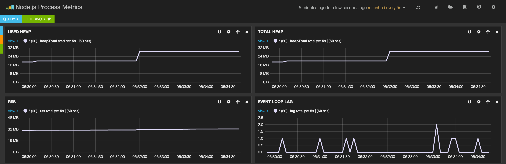
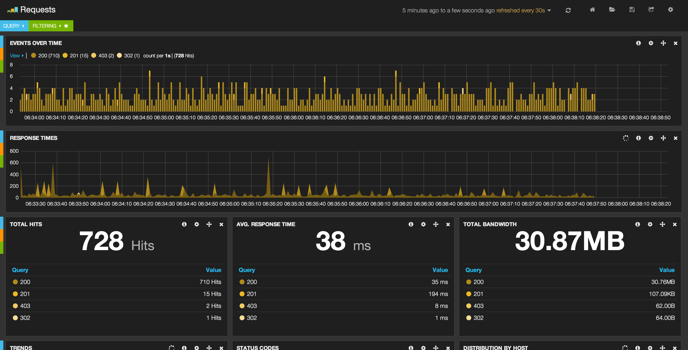

@SteveDeLacy
github.com/stevelacy
slacy.me
@wearefractal
What we will cover
- automating with gulp
- dev / production
- git deployment
- git hooks
- node git hooks
- logging
- reporting
DevOps is Not fun!
From code to User
gulpfile.js
var es = require('ecstatic');
var http = require('http');
var gulp = require('gulp');
var jade = require('gulp-jade');
var stylus = require('gulp-stylus');
var coffee = require('gulp-coffee');
var reload = require('gulp-livereload');
var prefix = require('gulp-autoprefixer');
gulp.task('stylus', function() {
return gulp.src('./src/**/*.styl')
.pipe(stylus())
.pipe(prefix())
.pipe(gulp.dest('./public'))
.pipe(reload());
});
gulp.task('jade', function() {
gulp.src('./src/**/*.jade')
.pipe(jade())
.pipe(gulp.dest('./public'))
.pipe(reload());
return gulp.src('./index.jade')
.pipe(jade())
.pipe(gulp.dest('./'))
.pipe(reload());
});
gulp.task('coffee', function() {
return gulp.src('./src/**/*.coffee')
.pipe(coffee())
.pipe(gulp.dest('./public'))
.pipe(reload());
});
gulp.task('copy', function() {
return gulp.src(['./src/**/*', '!./src/**/*.jade', '!./src/**/*.styl', '!./src/**/*.coffee'])
.pipe(gulp.dest('./public'));
});
gulp.task('server', function(done) {
var port = 5000;
var server = http.createServer(es({
root: './'
}));
return server.listen(port, done);
});
gulp.task('watch', function() {
gulp.watch(['./src/**/*.styl'], ['stylus']);
gulp.watch(['./**/*.jade'], ['jade']);
gulp.watch(['./**/*.coffee'], ['coffee']);
return gulp.watch(['./src/*', '!./src/*.jade', '!./src/*.styl', '!./src/*.coffee'], ['copy']);
});
gulp.task('default', ['server', 'stylus', 'jade', 'coffee', 'copy', 'watch']);
git add
git commit -m 'stuff'
git push origin master
Automate it!
var gulp = require('gulp');
var git = require('gulp-git');
// ... other tasks ...
gulp.task('git', function(){
return gulp.src('.')
.pipe(git.add({args: '-A'}))
.pipe(git.commit('gulp-git'))
.on('end', function(){
git.push('origin', 'master', function(err){
if (err){
console.log(err);
}
});
});
});
gulp.task('default', ['git']);
dev vs production
dev:
Deployment is sent to a 'Staging' server
production:
Deployment is sent to the main production server
staging vs production servers
staging:
Break code here
staging vs production servers
production
Do Not break code here!
Deploying
Old methods:
FTP / SFTP
SSH / SCP
wget
git method:
SSH to the server. cd to the folder. Run git pull. Restart the app.
Automate it!
git hooks / webhooks
A git webhook is a listener on github which calls an action when a git event occurs.
When you push code up, it sends a post request to a defined domain.
Great!Now what?
Create a js git hook
You can also use a few node modules for this task.
One of them is Gith
Pure js git hook listener
var http = require('http');
var querystring = require('querystring');
var exec = require('child_process').exec;
var config = {
port: 3000,
repo: 'git@github.com:stevelacy/git-hook2.git'
};
var start = function() {
var cmd = 'pm2 restart 0';
exec(cmd, function(err, stdout, stderr){
console.log(err, stdout, stderr);
});
};
var server = http.createServer(function(req, res) {
var data = '';
if (req.method === 'POST') {
req.on('data', function(chunk) {
data += chunk;
});
}
req.on('end', function() {
if (/^payload=/.test(data)) {
var payload = JSON.parse(querystring.unescape(data.slice(8)));
if (payload.repository && payload.repository.ssh_url) {
if (payload.repository.ssh_url == config.repo){
var cmd = 'git pull origin master';
exec(cmd, function(err, stdout, stderr){
console.log(err, stdout, stderr);
start();
});
}
}
res.writeHead(200, {
'Content-type': 'text/html'
});
return res.end();
}
res.writeHead(401, {
'Content-type': 'text/html'
});
return res.end();
});
});
server.listen(config.port);
- dev / production
- staging / production
- automate build deployments
- create a git hook
--- So far:
There are excellent hosting services which do all the deploying for you.
Logging
Logging is the term used to get a list of all the bad code you wrote.
Top two node.js logging choices:
Log ALL events
Example Bunyan log:
{"name":"myapp","hostname":"banana.local","pid":40161,"level":30,"msg":"hi","time":"2013-01-04T18:46:23.851Z","v":0}
{"name":"myapp","hostname":"myhost","pid":34572,"level":30,"msg":"done","time":"2013-01-04T07:47:25.816Z","v":0}
{"name":"myserver","hostname":"banana.local","pid":123,"req":{"method":"GET","url":"/path?q=1#anchor","headers":{"x-hi":"Mom","connection":"close"}},"level":3,"msg":"start request","time":"2012-02-03T19:02:46.178Z","v":0}{
"name": "myserver",
"hostname": "banana.local",
"pid": 123,
"req": {
"method": "GET",
"url": "/path?q=1#anchor",
"headers": {
"x-hi": "welcome",
"connection": "close"
},
"remoteAddress": "120.0.0.1",
"remotePort": 51244
},
"level": 3,
"msg": "start request",
"time": "2012-02-03T19:02:57.534Z",
"v": 0
}Bunyan setup
Create a logger and attach your Process stream.
var bunyan = require('bunyan');
var elasticsearch = require('bunyan-elasticsearch');
var logger = bunyan.createLogger({
name: 'My Application',
streams: [
{ stream: process.stdout },
{ stream: new Elasticsearch() },
{ path: '/var/log/myapp-error.log' }
],
serializers: bunyan.stdSerializers
});
logger.info('Starting application on port %d', app.get('port'));So, I have a database of logs, how do I view them?
Process Metrics
Requests
You can now see when an error is caused, and what caused it.
Letting you create applications and not do DevOps.
Great!
But what about monitoring?
New Relic
DataDog
AppDynamics
New Relic demo
Questions?
slacy.me